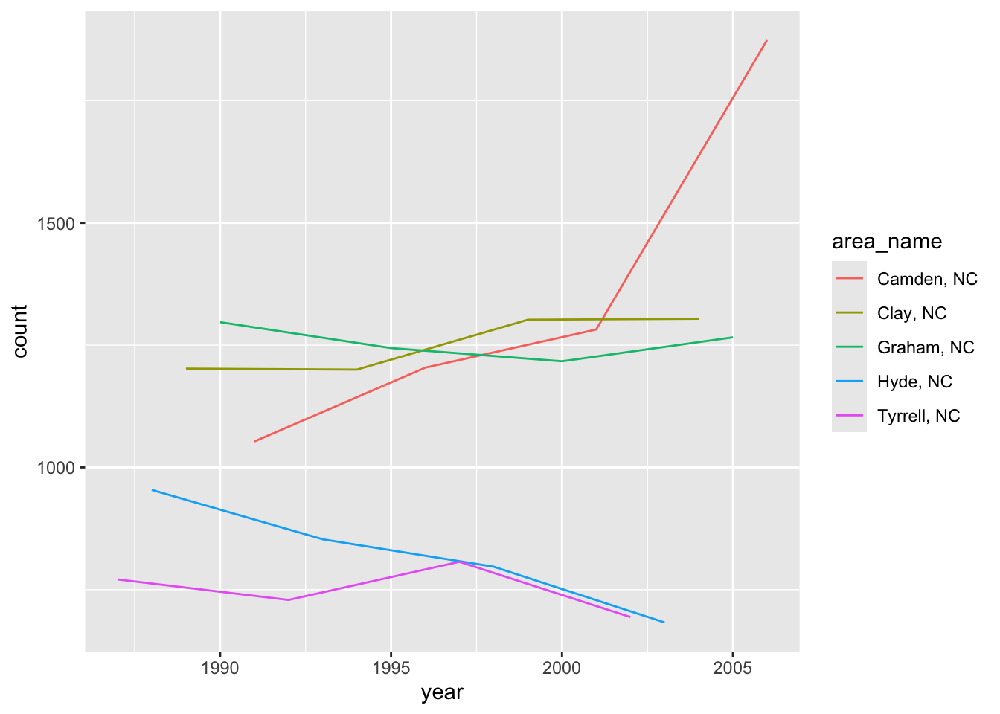
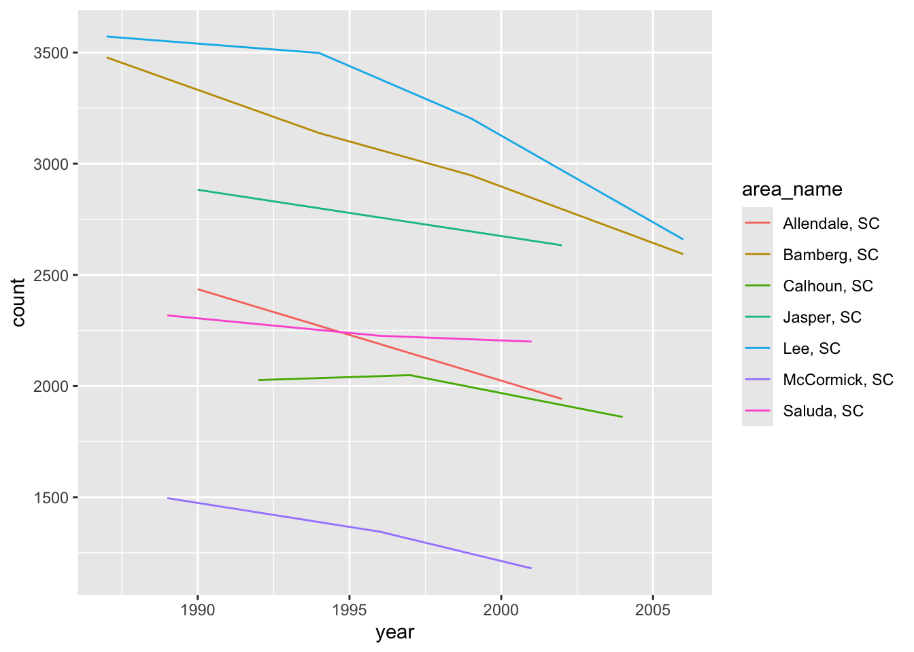
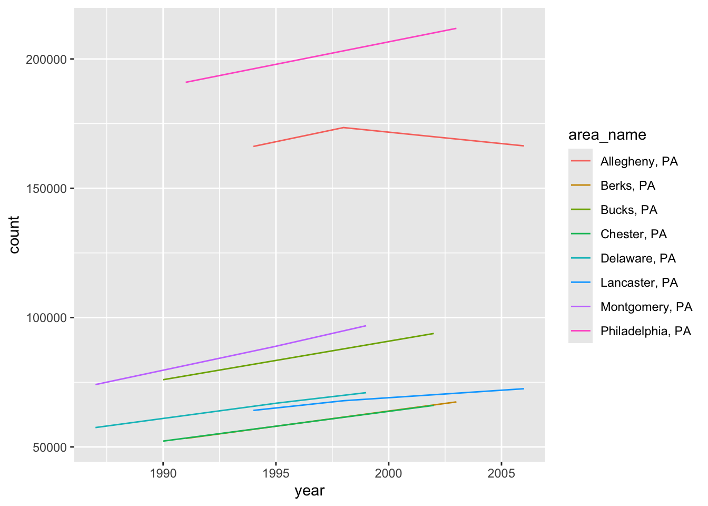
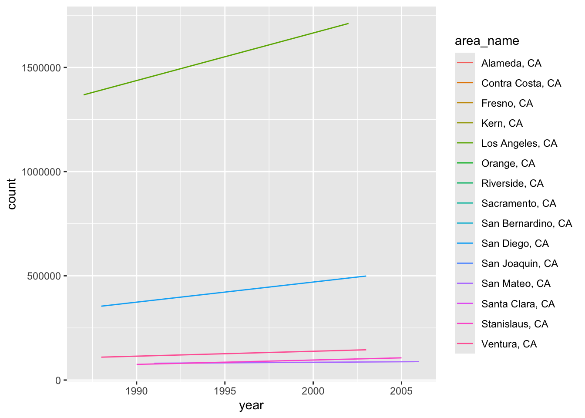
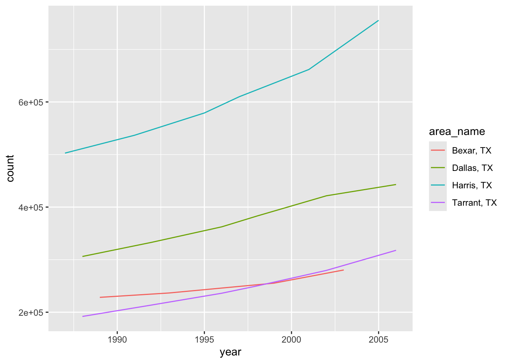
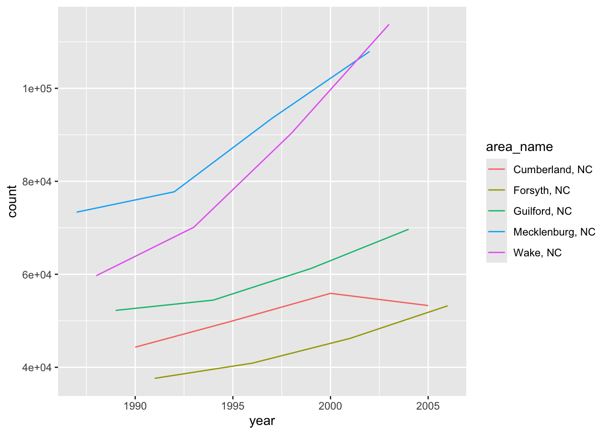
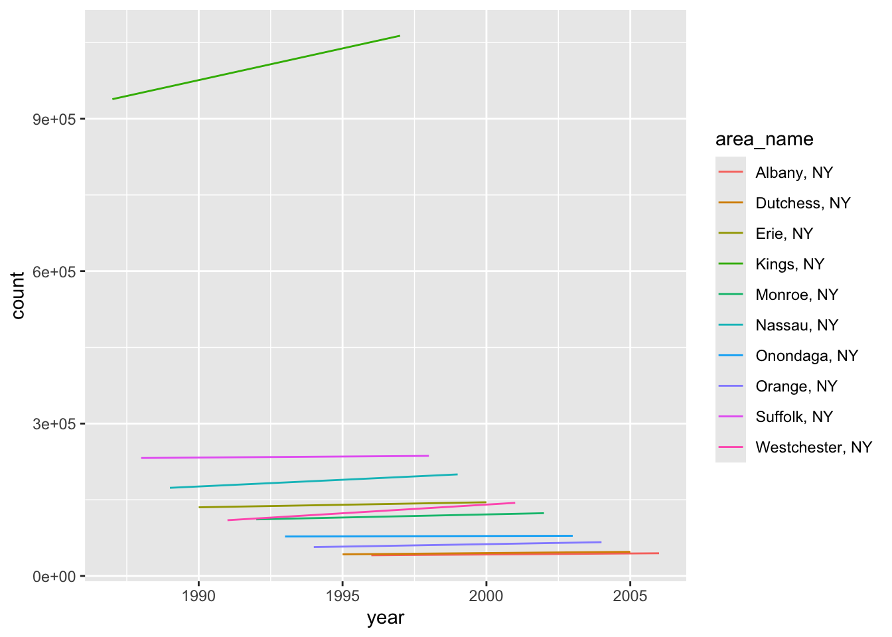

library(tidyverse)ST 558 - Project 1
Data Processing
Start by reading in the desired data
census_county <-
read_csv("https://www4.stat.ncsu.edu/~online/datasets/EDU01a.csv")
head(census_county)# A tibble: 6 × 42
Area_name STCOU EDU010187F EDU010187D EDU010187N1 EDU010187N2 EDU010188F
<chr> <chr> <dbl> <dbl> <chr> <chr> <dbl>
1 UNITED STATES 00000 0 40024299 0000 0000 0
2 ALABAMA 01000 0 733735 0000 0000 0
3 Autauga, AL 01001 0 6829 0000 0000 0
4 Baldwin, AL 01003 0 16417 0000 0000 0
5 Barbour, AL 01005 0 5071 0000 0000 0
6 Bibb, AL 01007 0 3557 0000 0000 0
# ℹ 35 more variables: EDU010188D <dbl>, EDU010188N1 <chr>, EDU010188N2 <chr>,
# EDU010189F <dbl>, EDU010189D <dbl>, EDU010189N1 <chr>, EDU010189N2 <chr>,
# EDU010190F <dbl>, EDU010190D <dbl>, EDU010190N1 <chr>, EDU010190N2 <chr>,
# EDU010191F <dbl>, EDU010191D <dbl>, EDU010191N1 <chr>, EDU010191N2 <chr>,
# EDU010192F <dbl>, EDU010192D <dbl>, EDU010192N1 <chr>, EDU010192N2 <chr>,
# EDU010193F <dbl>, EDU010193D <dbl>, EDU010193N1 <chr>, EDU010193N2 <chr>,
# EDU010194F <dbl>, EDU010194D <dbl>, EDU010194N1 <chr>, EDU010194N2 <chr>, …Step 1
Select the specific data in question, i.e. “Area Name”, STCOU, and variables ending in “D”. The “ends_with()” function, which is part of the {tidyselect} package can be used within the select function to identify those columns which end in “D”.
census_select <- census_county |>
select(area_name=Area_name, STCOU, ends_with("D"))
head(census_select)# A tibble: 6 × 12
area_name STCOU EDU010187D EDU010188D EDU010189D EDU010190D EDU010191D
<chr> <chr> <dbl> <dbl> <dbl> <dbl> <dbl>
1 UNITED STATES 00000 40024299 39967624 40317775 40737600 41385442
2 ALABAMA 01000 733735 728234 730048 728252 725541
3 Autauga, AL 01001 6829 6900 6920 6847 7008
4 Baldwin, AL 01003 16417 16465 16799 17054 17479
5 Barbour, AL 01005 5071 5098 5068 5156 5173
6 Bibb, AL 01007 3557 3508 3571 3621 3652
# ℹ 5 more variables: EDU010192D <dbl>, EDU010193D <dbl>, EDU010194D <dbl>,
# EDU010195D <dbl>, EDU010196D <dbl>Step 2
Convert data to long format.
census_long <- census_select |>
pivot_longer(cols = ends_with("D"),
names_to = "enrollment",
values_to = "value")
head(census_long)# A tibble: 6 × 4
area_name STCOU enrollment value
<chr> <chr> <chr> <dbl>
1 UNITED STATES 00000 EDU010187D 40024299
2 UNITED STATES 00000 EDU010188D 39967624
3 UNITED STATES 00000 EDU010189D 40317775
4 UNITED STATES 00000 EDU010190D 40737600
5 UNITED STATES 00000 EDU010191D 41385442
6 UNITED STATES 00000 EDU010192D 42088151Step 3
Create new columns for year and measurement from enrollment column
census_final <- census_long |>
mutate(
year = as.numeric(paste0("19", substr(enrollment, nchar(enrollment) - 2, nchar(enrollment) - 1))),
measurement = substr(enrollment, 1, nchar(enrollment) - 3)
)|>
select(area_name, STCOU, year, measurement, value)
head(census_final)# A tibble: 6 × 5
area_name STCOU year measurement value
<chr> <chr> <dbl> <chr> <dbl>
1 UNITED STATES 00000 1987 EDU0101 40024299
2 UNITED STATES 00000 1988 EDU0101 39967624
3 UNITED STATES 00000 1989 EDU0101 40317775
4 UNITED STATES 00000 1990 EDU0101 40737600
5 UNITED STATES 00000 1991 EDU0101 41385442
6 UNITED STATES 00000 1992 EDU0101 42088151Step 4
Create two datasets, one for county level data and one for non-county level data; then create classes for each dataset
county_indices <- grep(pattern = ", \\w\\w", census_final$area_name)
county_data <- census_final[county_indices, ]
class(county_data) <- c("county", class(county_data))
head(county_data)# A tibble: 6 × 5
area_name STCOU year measurement value
<chr> <chr> <dbl> <chr> <dbl>
1 Autauga, AL 01001 1987 EDU0101 6829
2 Autauga, AL 01001 1988 EDU0101 6900
3 Autauga, AL 01001 1989 EDU0101 6920
4 Autauga, AL 01001 1990 EDU0101 6847
5 Autauga, AL 01001 1991 EDU0101 7008
6 Autauga, AL 01001 1992 EDU0101 7137non_county_data <- census_final[-county_indices, ]
class(non_county_data) <- c("state", class(non_county_data))
head(non_county_data)# A tibble: 6 × 5
area_name STCOU year measurement value
<chr> <chr> <dbl> <chr> <dbl>
1 UNITED STATES 00000 1987 EDU0101 40024299
2 UNITED STATES 00000 1988 EDU0101 39967624
3 UNITED STATES 00000 1989 EDU0101 40317775
4 UNITED STATES 00000 1990 EDU0101 40737600
5 UNITED STATES 00000 1991 EDU0101 41385442
6 UNITED STATES 00000 1992 EDU0101 42088151Step 5
In the county dataset, create a new variable for state.
county_data <- county_data |>
mutate(state = substr(area_name, nchar(area_name) - 2, nchar(area_name)))
head(county_data)# A tibble: 6 × 6
area_name STCOU year measurement value state
<chr> <chr> <dbl> <chr> <dbl> <chr>
1 Autauga, AL 01001 1987 EDU0101 6829 " AL"
2 Autauga, AL 01001 1988 EDU0101 6900 " AL"
3 Autauga, AL 01001 1989 EDU0101 6920 " AL"
4 Autauga, AL 01001 1990 EDU0101 6847 " AL"
5 Autauga, AL 01001 1991 EDU0101 7008 " AL"
6 Autauga, AL 01001 1992 EDU0101 7137 " AL"Step 6
For non-county level data, create new column for divisions.
divisions <- c(
'ALABAMA' = 'Division 6',
'ALASKA' = 'Division 9',
'ARIZONA' = 'Division 8',
'ARKANSAS' = 'Division 7',
'CALIFORNIA' = 'Division 9',
'COLORADO' = 'Division 8',
'CONNECTICUT' = 'Division 1',
'DELAWARE' = 'Division 5',
'FLORIDA' = 'Division 5',
'GEORGIA' = 'Division 5',
'HAWAII' = 'Division 9',
'IDAHO' = 'Division 8',
'ILLINOIS' = 'Division 3',
'INDIANA' = 'Division 3',
'IOWA' = 'Division 4',
'KANSAS' = 'Division 4',
'KENTUCKY' = 'Division 6',
'LOUISIANA' = 'Division 7',
'MAINE' = 'Division 1',
'MARYLAND' = 'Division 5',
'MASSACHUSETTS' = 'Division 1',
'MICHIGAN' = 'Division 3',
'MINNESOTA' = 'Division 4',
'MISSISSIPPI' = 'Division 6',
'MISSOURI' = 'Division 4',
'MONTANA' = 'Division 8',
'NEBRASKA' = 'Division 4',
'NEVADA' = 'Division 8',
'NEW HAMPSHIRE' = 'Division 1',
'NEW JERSEY' = 'Division 2',
'NEW MEXICO' = 'Division 8',
'NEW YORK' = 'Division 2',
'NORTH CAROLINA' = 'Division 5',
'NORTH DAKOTA' = 'Division 4',
'OHIO' = 'Division 3',
'OKLAHOMA' = 'Division 7',
'OREGON' = 'Division 9',
'PENNSYLVANIA' = 'Division 2',
'RHODE ISLAND' = 'Division 1',
'SOUTH CAROLINA' = 'Division 5',
'SOUTH DAKOTA' = 'Division 4',
'TENNESSEE' = 'Division 6',
'TEXAS' = 'Division 7',
'UTAH' = 'Division 8',
'VERMONT' = 'Division 1',
'VIRGINIA' = 'Division 5',
'WASHINGTON' = 'Division 9',
'WEST VIRGINIA' = 'Division 5',
'WISCONSIN' = 'Division 3',
'WYOMING' = 'Division 8'
)
non_county_data <- non_county_data |>
mutate(division = ifelse(area_name %in% names(divisions),
divisions[area_name], 'ERROR'))
head(non_county_data)# A tibble: 6 × 6
area_name STCOU year measurement value division
<chr> <chr> <dbl> <chr> <dbl> <chr>
1 UNITED STATES 00000 1987 EDU0101 40024299 ERROR
2 UNITED STATES 00000 1988 EDU0101 39967624 ERROR
3 UNITED STATES 00000 1989 EDU0101 40317775 ERROR
4 UNITED STATES 00000 1990 EDU0101 40737600 ERROR
5 UNITED STATES 00000 1991 EDU0101 41385442 ERROR
6 UNITED STATES 00000 1992 EDU0101 42088151 ERROR NOTE - Washington D.C. includes duplicate entries in the dataset, for both “DISTRICT OF COLUMBIA” and “District of Columbia”.
Generating Functions to Process Data
Repeat the steps described in the ‘Data Processing’ section, but within the context of a function to generalize the actions. First, we’ll build building block functions to replicate the specific tasks described in the preceding section.
census_county_b <-
read_csv("https://www4.stat.ncsu.edu/~online/datasets/EDU01b.csv")
head(census_county_b)# A tibble: 6 × 42
Area_name STCOU EDU010197F EDU010197D EDU010197N1 EDU010197N2 EDU010198F
<chr> <chr> <dbl> <dbl> <chr> <chr> <dbl>
1 UNITED STATES 00000 0 44534459 0000 0000 0
2 ALABAMA 01000 0 737386 0000 0000 0
3 Autauga, AL 01001 0 8099 0000 0000 0
4 Baldwin, AL 01003 0 21410 0000 0000 0
5 Barbour, AL 01005 0 5100 0000 0000 0
6 Bibb, AL 01007 0 3717 0000 0000 0
# ℹ 35 more variables: EDU010198D <dbl>, EDU010198N1 <chr>, EDU010198N2 <chr>,
# EDU010199F <dbl>, EDU010199D <dbl>, EDU010199N1 <chr>, EDU010199N2 <chr>,
# EDU010200F <dbl>, EDU010200D <dbl>, EDU010200N1 <chr>, EDU010200N2 <chr>,
# EDU010201F <dbl>, EDU010201D <dbl>, EDU010201N1 <chr>, EDU010201N2 <chr>,
# EDU010202F <dbl>, EDU010202D <dbl>, EDU010202N1 <chr>, EDU010202N2 <chr>,
# EDU015203F <dbl>, EDU015203D <dbl>, EDU015203N1 <chr>, EDU015203N2 <chr>,
# EDU015204F <dbl>, EDU015204D <dbl>, EDU015204N1 <chr>, EDU015204N2 <chr>, …Function for Steps 1 & 2
Write a function associated with pulling out area name, STCOU, and enrollment numbers, then pivoting to a long data format.
sel_pivot <- function(x, value = "count") {
x |>
select(area_name=Area_name, STCOU, ends_with("D")) |>
pivot_longer(cols = ends_with("D"),
names_to = "enrollment",
values_to = value)
}
census_long_b <- sel_pivot(census_county_b)
head(census_long_b)# A tibble: 6 × 4
area_name STCOU enrollment count
<chr> <chr> <chr> <dbl>
1 UNITED STATES 00000 EDU010197D 44534459
2 UNITED STATES 00000 EDU010198D 46245814
3 UNITED STATES 00000 EDU010199D 46368903
4 UNITED STATES 00000 EDU010200D 46818690
5 UNITED STATES 00000 EDU010201D 47127066
6 UNITED STATES 00000 EDU010202D 47606570Function for Step 3
Write a further function which creates columns for ‘year’ and ‘measurement’ from the output of the ‘sel_pivot’ function.
add_yr_meas <- function(x, value = "count") {
yr_end <- substr(x$enrollment, nchar(x$enrollment) - 2,
nchar(x$enrollment) - 1)
x |>
mutate(year = as.numeric(ifelse(yr_end <= 24,
paste0("20", yr_end),
paste0("19", yr_end))),
measurement = substr(enrollment, 1, nchar(enrollment) - 3)) |>
select(area_name, STCOU, year, measurement, value)
}
census_final_b <- add_yr_meas(census_long_b)
head(census_final_b)# A tibble: 6 × 5
area_name STCOU year measurement count
<chr> <chr> <dbl> <chr> <dbl>
1 UNITED STATES 00000 1997 EDU0101 44534459
2 UNITED STATES 00000 1998 EDU0101 46245814
3 UNITED STATES 00000 1999 EDU0101 46368903
4 UNITED STATES 00000 2000 EDU0102 46818690
5 UNITED STATES 00000 2001 EDU0102 47127066
6 UNITED STATES 00000 2002 EDU0102 47606570Function for Step 5
Write a function which adds a state ID column for county-specific data. At this point, 2 separate data sets (county vs non-county) are not presumed.
add_state <- function(x) {
x |>
mutate(state = substr(area_name, nchar(area_name) - 2,
nchar(area_name)))
}Function for Step 6
Write a function assigning a census-defined “division” to the states identified in the non-county dataset. At this point, 2 separate data sets (county vs non-county) are not presumed.
assign_division <- function(x){
divisions <- c(
'ALABAMA' = 'Division 6',
'ALASKA' = 'Division 9',
'ARIZONA' = 'Division 8',
'ARKANSAS' = 'Division 7',
'CALIFORNIA' = 'Division 9',
'COLORADO' = 'Division 8',
'CONNECTICUT' = 'Division 1',
'DELAWARE' = 'Division 5',
'FLORIDA' = 'Division 5',
'GEORGIA' = 'Division 5',
'HAWAII' = 'Division 9',
'IDAHO' = 'Division 8',
'ILLINOIS' = 'Division 3',
'INDIANA' = 'Division 3',
'IOWA' = 'Division 4',
'KANSAS' = 'Division 4',
'KENTUCKY' = 'Division 6',
'LOUISIANA' = 'Division 7',
'MAINE' = 'Division 1',
'MARYLAND' = 'Division 5',
'MASSACHUSETTS' = 'Division 1',
'MICHIGAN' = 'Division 3',
'MINNESOTA' = 'Division 4',
'MISSISSIPPI' = 'Division 6',
'MISSOURI' = 'Division 4',
'MONTANA' = 'Division 8',
'NEBRASKA' = 'Division 4',
'NEVADA' = 'Division 8',
'NEW HAMPSHIRE' = 'Division 1',
'NEW JERSEY' = 'Division 2',
'NEW MEXICO' = 'Division 8',
'NEW YORK' = 'Division 2',
'NORTH CAROLINA' = 'Division 5',
'NORTH DAKOTA' = 'Division 4',
'OHIO' = 'Division 3',
'OKLAHOMA' = 'Division 7',
'OREGON' = 'Division 9',
'PENNSYLVANIA' = 'Division 2',
'RHODE ISLAND' = 'Division 1',
'SOUTH CAROLINA' = 'Division 5',
'SOUTH DAKOTA' = 'Division 4',
'TENNESSEE' = 'Division 6',
'TEXAS' = 'Division 7',
'UTAH' = 'Division 8',
'VERMONT' = 'Division 1',
'VIRGINIA' = 'Division 5',
'WASHINGTON' = 'Division 9',
'WEST VIRGINIA' = 'Division 5',
'WISCONSIN' = 'Division 3',
'WYOMING' = 'Division 8'
)
x |>
mutate(division = ifelse(area_name %in% names(divisions),
divisions[area_name], 'ERROR'))
}Function for Step 4
Now write a function that creates 2 data sets (county & non-county) and uses the ‘add_state’ and ‘assign_division’ functions above to return 2 tibbles.
The input to this dataset is the single data set with county & non-county data which has the variables ‘year’, ‘measurement’, and a function-defined “value”.
sep_county_data <- function(x) {
fcn_indices <- grep(pattern = ", \\w\\w", x$area_name)
fcn_county_data <- x[fcn_indices, ]
class(fcn_county_data) <- c("county", class(fcn_county_data))
fcn_non_county_data <- x[-fcn_indices, ]
class(fcn_non_county_data) <- c("state", class(fcn_non_county_data))
transformed_county_data <- add_state(fcn_county_data)
transformed_non_county_data <- assign_division(fcn_non_county_data)
transformed_data_list <- list(transformed_county_data,
transformed_non_county_data)
return(transformed_data_list)
}
sep_county_data(census_final_b)[[1]]
# A tibble: 31,450 × 6
area_name STCOU year measurement count state
<chr> <chr> <dbl> <chr> <dbl> <chr>
1 Autauga, AL 01001 1997 EDU0101 8099 " AL"
2 Autauga, AL 01001 1998 EDU0101 8211 " AL"
3 Autauga, AL 01001 1999 EDU0101 8489 " AL"
4 Autauga, AL 01001 2000 EDU0102 8912 " AL"
5 Autauga, AL 01001 2001 EDU0102 8626 " AL"
6 Autauga, AL 01001 2002 EDU0102 8762 " AL"
7 Autauga, AL 01001 2003 EDU0152 9105 " AL"
8 Autauga, AL 01001 2004 EDU0152 9200 " AL"
9 Autauga, AL 01001 2005 EDU0152 9559 " AL"
10 Autauga, AL 01001 2006 EDU0152 9652 " AL"
# ℹ 31,440 more rows
[[2]]
# A tibble: 530 × 6
area_name STCOU year measurement count division
<chr> <chr> <dbl> <chr> <dbl> <chr>
1 UNITED STATES 00000 1997 EDU0101 44534459 ERROR
2 UNITED STATES 00000 1998 EDU0101 46245814 ERROR
3 UNITED STATES 00000 1999 EDU0101 46368903 ERROR
4 UNITED STATES 00000 2000 EDU0102 46818690 ERROR
5 UNITED STATES 00000 2001 EDU0102 47127066 ERROR
6 UNITED STATES 00000 2002 EDU0102 47606570 ERROR
7 UNITED STATES 00000 2003 EDU0152 48506317 ERROR
8 UNITED STATES 00000 2004 EDU0152 48693287 ERROR
9 UNITED STATES 00000 2005 EDU0152 48978555 ERROR
10 UNITED STATES 00000 2006 EDU0152 49140702 ERROR
# ℹ 520 more rowsWrapper Function
Combining the functions developed previously, we’ll create one wrapper function to perform all the steps.
my_wrapper <- function(url, value = "count") {
read_csv(url) |>
sel_pivot(value = value) |>
add_yr_meas(value = value) |>
sep_county_data()
}
my_wrapper(url = "https://www4.stat.ncsu.edu/~online/datasets/EDU01b.csv")[[1]]
# A tibble: 31,450 × 6
area_name STCOU year measurement count state
<chr> <chr> <dbl> <chr> <dbl> <chr>
1 Autauga, AL 01001 1997 EDU0101 8099 " AL"
2 Autauga, AL 01001 1998 EDU0101 8211 " AL"
3 Autauga, AL 01001 1999 EDU0101 8489 " AL"
4 Autauga, AL 01001 2000 EDU0102 8912 " AL"
5 Autauga, AL 01001 2001 EDU0102 8626 " AL"
6 Autauga, AL 01001 2002 EDU0102 8762 " AL"
7 Autauga, AL 01001 2003 EDU0152 9105 " AL"
8 Autauga, AL 01001 2004 EDU0152 9200 " AL"
9 Autauga, AL 01001 2005 EDU0152 9559 " AL"
10 Autauga, AL 01001 2006 EDU0152 9652 " AL"
# ℹ 31,440 more rows
[[2]]
# A tibble: 530 × 6
area_name STCOU year measurement count division
<chr> <chr> <dbl> <chr> <dbl> <chr>
1 UNITED STATES 00000 1997 EDU0101 44534459 ERROR
2 UNITED STATES 00000 1998 EDU0101 46245814 ERROR
3 UNITED STATES 00000 1999 EDU0101 46368903 ERROR
4 UNITED STATES 00000 2000 EDU0102 46818690 ERROR
5 UNITED STATES 00000 2001 EDU0102 47127066 ERROR
6 UNITED STATES 00000 2002 EDU0102 47606570 ERROR
7 UNITED STATES 00000 2003 EDU0152 48506317 ERROR
8 UNITED STATES 00000 2004 EDU0152 48693287 ERROR
9 UNITED STATES 00000 2005 EDU0152 48978555 ERROR
10 UNITED STATES 00000 2006 EDU0152 49140702 ERROR
# ℹ 520 more rowsCall it and Combine
Use the preceding ‘my_wrapper’ function to transform/manipulate the 2 census datasets on enrollment which have been studied thus far - EDU01a & EDU01b.
EDU01a_transformed_data <- my_wrapper(url = "https://www4.stat.ncsu.edu/~online/datasets/EDU01a.csv")
EDU01b_transformed_data <- my_wrapper(url = "https://www4.stat.ncsu.edu/~online/datasets/EDU01b.csv")
head(EDU01a_transformed_data)[[1]]
# A tibble: 31,450 × 6
area_name STCOU year measurement count state
<chr> <chr> <dbl> <chr> <dbl> <chr>
1 Autauga, AL 01001 1987 EDU0101 6829 " AL"
2 Autauga, AL 01001 1988 EDU0101 6900 " AL"
3 Autauga, AL 01001 1989 EDU0101 6920 " AL"
4 Autauga, AL 01001 1990 EDU0101 6847 " AL"
5 Autauga, AL 01001 1991 EDU0101 7008 " AL"
6 Autauga, AL 01001 1992 EDU0101 7137 " AL"
7 Autauga, AL 01001 1993 EDU0101 7152 " AL"
8 Autauga, AL 01001 1994 EDU0101 7381 " AL"
9 Autauga, AL 01001 1995 EDU0101 7568 " AL"
10 Autauga, AL 01001 1996 EDU0101 7834 " AL"
# ℹ 31,440 more rows
[[2]]
# A tibble: 530 × 6
area_name STCOU year measurement count division
<chr> <chr> <dbl> <chr> <dbl> <chr>
1 UNITED STATES 00000 1987 EDU0101 40024299 ERROR
2 UNITED STATES 00000 1988 EDU0101 39967624 ERROR
3 UNITED STATES 00000 1989 EDU0101 40317775 ERROR
4 UNITED STATES 00000 1990 EDU0101 40737600 ERROR
5 UNITED STATES 00000 1991 EDU0101 41385442 ERROR
6 UNITED STATES 00000 1992 EDU0101 42088151 ERROR
7 UNITED STATES 00000 1993 EDU0101 42724710 ERROR
8 UNITED STATES 00000 1994 EDU0101 43369917 ERROR
9 UNITED STATES 00000 1995 EDU0101 43993459 ERROR
10 UNITED STATES 00000 1996 EDU0101 44715737 ERROR
# ℹ 520 more rowshead(EDU01b_transformed_data)[[1]]
# A tibble: 31,450 × 6
area_name STCOU year measurement count state
<chr> <chr> <dbl> <chr> <dbl> <chr>
1 Autauga, AL 01001 1997 EDU0101 8099 " AL"
2 Autauga, AL 01001 1998 EDU0101 8211 " AL"
3 Autauga, AL 01001 1999 EDU0101 8489 " AL"
4 Autauga, AL 01001 2000 EDU0102 8912 " AL"
5 Autauga, AL 01001 2001 EDU0102 8626 " AL"
6 Autauga, AL 01001 2002 EDU0102 8762 " AL"
7 Autauga, AL 01001 2003 EDU0152 9105 " AL"
8 Autauga, AL 01001 2004 EDU0152 9200 " AL"
9 Autauga, AL 01001 2005 EDU0152 9559 " AL"
10 Autauga, AL 01001 2006 EDU0152 9652 " AL"
# ℹ 31,440 more rows
[[2]]
# A tibble: 530 × 6
area_name STCOU year measurement count division
<chr> <chr> <dbl> <chr> <dbl> <chr>
1 UNITED STATES 00000 1997 EDU0101 44534459 ERROR
2 UNITED STATES 00000 1998 EDU0101 46245814 ERROR
3 UNITED STATES 00000 1999 EDU0101 46368903 ERROR
4 UNITED STATES 00000 2000 EDU0102 46818690 ERROR
5 UNITED STATES 00000 2001 EDU0102 47127066 ERROR
6 UNITED STATES 00000 2002 EDU0102 47606570 ERROR
7 UNITED STATES 00000 2003 EDU0152 48506317 ERROR
8 UNITED STATES 00000 2004 EDU0152 48693287 ERROR
9 UNITED STATES 00000 2005 EDU0152 48978555 ERROR
10 UNITED STATES 00000 2006 EDU0152 49140702 ERROR
# ℹ 520 more rowsCreate a function that combines county data from EDU01a & EDU01b, and combines non-county data from EDU01a & EDU01b. The result will be 2 tibbles, one of combined county data, and one of combined non-county data.
combined_enrollment <- function(dataset_a, dataset_b) {
county_df <- dplyr::bind_rows(dataset_a[[1]], dataset_b[[1]])
state_df <- dplyr::bind_rows(dataset_a[[2]], dataset_b[[2]])
combined_data_list <- list(county_df, state_df)
return(combined_data_list)
}
census_EDU01 <- combined_enrollment(EDU01a_transformed_data, EDU01b_transformed_data)
head(census_EDU01)[[1]]
# A tibble: 62,900 × 6
area_name STCOU year measurement count state
<chr> <chr> <dbl> <chr> <dbl> <chr>
1 Autauga, AL 01001 1987 EDU0101 6829 " AL"
2 Autauga, AL 01001 1988 EDU0101 6900 " AL"
3 Autauga, AL 01001 1989 EDU0101 6920 " AL"
4 Autauga, AL 01001 1990 EDU0101 6847 " AL"
5 Autauga, AL 01001 1991 EDU0101 7008 " AL"
6 Autauga, AL 01001 1992 EDU0101 7137 " AL"
7 Autauga, AL 01001 1993 EDU0101 7152 " AL"
8 Autauga, AL 01001 1994 EDU0101 7381 " AL"
9 Autauga, AL 01001 1995 EDU0101 7568 " AL"
10 Autauga, AL 01001 1996 EDU0101 7834 " AL"
# ℹ 62,890 more rows
[[2]]
# A tibble: 1,060 × 6
area_name STCOU year measurement count division
<chr> <chr> <dbl> <chr> <dbl> <chr>
1 UNITED STATES 00000 1987 EDU0101 40024299 ERROR
2 UNITED STATES 00000 1988 EDU0101 39967624 ERROR
3 UNITED STATES 00000 1989 EDU0101 40317775 ERROR
4 UNITED STATES 00000 1990 EDU0101 40737600 ERROR
5 UNITED STATES 00000 1991 EDU0101 41385442 ERROR
6 UNITED STATES 00000 1992 EDU0101 42088151 ERROR
7 UNITED STATES 00000 1993 EDU0101 42724710 ERROR
8 UNITED STATES 00000 1994 EDU0101 43369917 ERROR
9 UNITED STATES 00000 1995 EDU0101 43993459 ERROR
10 UNITED STATES 00000 1996 EDU0101 44715737 ERROR
# ℹ 1,050 more rowsGeneral Summary Function
Create a plotting function to show means of each enrollment count for years vs Division from the ‘state’ class data set.
plot.state <- function(df, value = "count") {
y <- df |>
group_by(division, year) |>
summarise(Mean = mean(get(value), na.rm = TRUE)) |>
filter(division != "ERROR")
gg <- ggplot(y, aes(x=year, y=Mean, color = division))
gg + geom_line()
}
plot.state(census_EDU01[[2]], value = "count")
Using the ‘county’ class data set, generate a plot of county enrollments. The county data to be plotted should be selectable by state, average county enrollment, ascending or descending values, and the number of counties to return.
plot.county <- function(df, var_name = "count", state_selection = "NC", top = TRUE, n = 5) {
y <- df |>
filter(state == paste0(" ", state_selection)) |>
group_by(area_name) |>
summarise(Mean = mean(get(var_name), na.rm = TRUE)) |>
arrange(if (top) desc(Mean) else Mean) |>
slice_head(n = n)
ggplot(y, aes(x = area_name, y = Mean)) +
geom_bar(stat = "identity", fill = "#9CAF88", color = "black") +
labs(
title = paste(n, "Counties in", state_selection, "by", var_name),
x = "County",
y = "Mean Value"
) +
theme_minimal() +
theme(
axis.text.x = element_text(angle = 90, vjust = 0.5, hjust = 1),
plot.title = element_text(hjust = 0.5, face = "bold")
) +
geom_text(aes(label = round(Mean, 2)), vjust = -0.5, size = 3.5)
}
plot.county(census_EDU01[[1]], top =FALSE)
Put it Together
Original datasets
Run your data processing function on the two enrollment URLs given previously, specifying an appro- priate name for the enrollment data column.
EDU01a_transformed_data <- my_wrapper(url = "https://www4.stat.ncsu.edu/~online/datasets/EDU01a.csv")
EDU01b_transformed_data <- my_wrapper(url = "https://www4.stat.ncsu.edu/~online/datasets/EDU01b.csv")
head(EDU01a_transformed_data)[[1]]
# A tibble: 31,450 × 6
area_name STCOU year measurement count state
<chr> <chr> <dbl> <chr> <dbl> <chr>
1 Autauga, AL 01001 1987 EDU0101 6829 " AL"
2 Autauga, AL 01001 1988 EDU0101 6900 " AL"
3 Autauga, AL 01001 1989 EDU0101 6920 " AL"
4 Autauga, AL 01001 1990 EDU0101 6847 " AL"
5 Autauga, AL 01001 1991 EDU0101 7008 " AL"
6 Autauga, AL 01001 1992 EDU0101 7137 " AL"
7 Autauga, AL 01001 1993 EDU0101 7152 " AL"
8 Autauga, AL 01001 1994 EDU0101 7381 " AL"
9 Autauga, AL 01001 1995 EDU0101 7568 " AL"
10 Autauga, AL 01001 1996 EDU0101 7834 " AL"
# ℹ 31,440 more rows
[[2]]
# A tibble: 530 × 6
area_name STCOU year measurement count division
<chr> <chr> <dbl> <chr> <dbl> <chr>
1 UNITED STATES 00000 1987 EDU0101 40024299 ERROR
2 UNITED STATES 00000 1988 EDU0101 39967624 ERROR
3 UNITED STATES 00000 1989 EDU0101 40317775 ERROR
4 UNITED STATES 00000 1990 EDU0101 40737600 ERROR
5 UNITED STATES 00000 1991 EDU0101 41385442 ERROR
6 UNITED STATES 00000 1992 EDU0101 42088151 ERROR
7 UNITED STATES 00000 1993 EDU0101 42724710 ERROR
8 UNITED STATES 00000 1994 EDU0101 43369917 ERROR
9 UNITED STATES 00000 1995 EDU0101 43993459 ERROR
10 UNITED STATES 00000 1996 EDU0101 44715737 ERROR
# ℹ 520 more rowshead(EDU01b_transformed_data)[[1]]
# A tibble: 31,450 × 6
area_name STCOU year measurement count state
<chr> <chr> <dbl> <chr> <dbl> <chr>
1 Autauga, AL 01001 1997 EDU0101 8099 " AL"
2 Autauga, AL 01001 1998 EDU0101 8211 " AL"
3 Autauga, AL 01001 1999 EDU0101 8489 " AL"
4 Autauga, AL 01001 2000 EDU0102 8912 " AL"
5 Autauga, AL 01001 2001 EDU0102 8626 " AL"
6 Autauga, AL 01001 2002 EDU0102 8762 " AL"
7 Autauga, AL 01001 2003 EDU0152 9105 " AL"
8 Autauga, AL 01001 2004 EDU0152 9200 " AL"
9 Autauga, AL 01001 2005 EDU0152 9559 " AL"
10 Autauga, AL 01001 2006 EDU0152 9652 " AL"
# ℹ 31,440 more rows
[[2]]
# A tibble: 530 × 6
area_name STCOU year measurement count division
<chr> <chr> <dbl> <chr> <dbl> <chr>
1 UNITED STATES 00000 1997 EDU0101 44534459 ERROR
2 UNITED STATES 00000 1998 EDU0101 46245814 ERROR
3 UNITED STATES 00000 1999 EDU0101 46368903 ERROR
4 UNITED STATES 00000 2000 EDU0102 46818690 ERROR
5 UNITED STATES 00000 2001 EDU0102 47127066 ERROR
6 UNITED STATES 00000 2002 EDU0102 47606570 ERROR
7 UNITED STATES 00000 2003 EDU0152 48506317 ERROR
8 UNITED STATES 00000 2004 EDU0152 48693287 ERROR
9 UNITED STATES 00000 2005 EDU0152 48978555 ERROR
10 UNITED STATES 00000 2006 EDU0152 49140702 ERROR
# ℹ 520 more rowsRun your data combining function to put these into one object (with two data frames)
census_EDU01 <- combined_enrollment(EDU01a_transformed_data, EDU01b_transformed_data)
head(census_EDU01)[[1]]
# A tibble: 62,900 × 6
area_name STCOU year measurement count state
<chr> <chr> <dbl> <chr> <dbl> <chr>
1 Autauga, AL 01001 1987 EDU0101 6829 " AL"
2 Autauga, AL 01001 1988 EDU0101 6900 " AL"
3 Autauga, AL 01001 1989 EDU0101 6920 " AL"
4 Autauga, AL 01001 1990 EDU0101 6847 " AL"
5 Autauga, AL 01001 1991 EDU0101 7008 " AL"
6 Autauga, AL 01001 1992 EDU0101 7137 " AL"
7 Autauga, AL 01001 1993 EDU0101 7152 " AL"
8 Autauga, AL 01001 1994 EDU0101 7381 " AL"
9 Autauga, AL 01001 1995 EDU0101 7568 " AL"
10 Autauga, AL 01001 1996 EDU0101 7834 " AL"
# ℹ 62,890 more rows
[[2]]
# A tibble: 1,060 × 6
area_name STCOU year measurement count division
<chr> <chr> <dbl> <chr> <dbl> <chr>
1 UNITED STATES 00000 1987 EDU0101 40024299 ERROR
2 UNITED STATES 00000 1988 EDU0101 39967624 ERROR
3 UNITED STATES 00000 1989 EDU0101 40317775 ERROR
4 UNITED STATES 00000 1990 EDU0101 40737600 ERROR
5 UNITED STATES 00000 1991 EDU0101 41385442 ERROR
6 UNITED STATES 00000 1992 EDU0101 42088151 ERROR
7 UNITED STATES 00000 1993 EDU0101 42724710 ERROR
8 UNITED STATES 00000 1994 EDU0101 43369917 ERROR
9 UNITED STATES 00000 1995 EDU0101 43993459 ERROR
10 UNITED STATES 00000 1996 EDU0101 44715737 ERROR
# ℹ 1,050 more rowsUse the plot function on the state data frame
plot.state(census_EDU01[[2]], value = "count")Use the plot function on the county data frame
plot.county(census_EDU01[[1]], state_selection = "NC", top = TRUE, n = 20)
plot.county(census_EDU01[[1]], state_selection = "SC", top = FALSE, n = 7)
plot.county(census_EDU01[[1]])
plot.county(census_EDU01[[1]], state_selection = "PA", top = TRUE, n = 8)
New Datasets
Run the data processing function on the four data sets at URLs given
PST01a_transformed_data <- my_wrapper(url = "https://www4.stat.ncsu.edu/~online/datasets/PST01a.csv")
PST01b_transformed_data <- my_wrapper(url = "https://www4.stat.ncsu.edu/~online/datasets/PST01b.csv")
PST01c_transformed_data <- my_wrapper(url = "https://www4.stat.ncsu.edu/~online/datasets/PST01c.csv")
PST01d_transformed_data <- my_wrapper(url = "https://www4.stat.ncsu.edu/~online/datasets/PST01d.csv")
head(PST01a_transformed_data)[[1]]
# A tibble: 31,450 × 6
area_name STCOU year measurement count state
<chr> <chr> <dbl> <chr> <dbl> <chr>
1 Autauga, AL 01001 1971 PST0151 25508 " AL"
2 Autauga, AL 01001 1972 PST0151 27166 " AL"
3 Autauga, AL 01001 1973 PST0151 28463 " AL"
4 Autauga, AL 01001 1974 PST0151 29266 " AL"
5 Autauga, AL 01001 1975 PST0151 29718 " AL"
6 Autauga, AL 01001 1976 PST0151 29896 " AL"
7 Autauga, AL 01001 1977 PST0151 30462 " AL"
8 Autauga, AL 01001 1978 PST0151 30882 " AL"
9 Autauga, AL 01001 1979 PST0151 32055 " AL"
10 Autauga, AL 01001 1981 PST0251 31985 " AL"
# ℹ 31,440 more rows
[[2]]
# A tibble: 530 × 6
area_name STCOU year measurement count division
<chr> <chr> <dbl> <chr> <dbl> <chr>
1 UNITED STATES 00000 1971 PST0151 206827028 ERROR
2 UNITED STATES 00000 1972 PST0151 209283904 ERROR
3 UNITED STATES 00000 1973 PST0151 211357490 ERROR
4 UNITED STATES 00000 1974 PST0151 213341552 ERROR
5 UNITED STATES 00000 1975 PST0151 215465246 ERROR
6 UNITED STATES 00000 1976 PST0151 217562728 ERROR
7 UNITED STATES 00000 1977 PST0151 219759860 ERROR
8 UNITED STATES 00000 1978 PST0151 222095080 ERROR
9 UNITED STATES 00000 1979 PST0151 224567234 ERROR
10 UNITED STATES 00000 1981 PST0251 229466391 ERROR
# ℹ 520 more rowshead(PST01b_transformed_data)[[1]]
# A tibble: 31,450 × 6
area_name STCOU year measurement count state
<chr> <chr> <dbl> <chr> <dbl> <chr>
1 Autauga, AL 01001 1982 PST0251 32038 " AL"
2 Autauga, AL 01001 1983 PST0251 32057 " AL"
3 Autauga, AL 01001 1984 PST0251 32130 " AL"
4 Autauga, AL 01001 1985 PST0251 32248 " AL"
5 Autauga, AL 01001 1986 PST0251 32895 " AL"
6 Autauga, AL 01001 1987 PST0251 33266 " AL"
7 Autauga, AL 01001 1988 PST0251 33637 " AL"
8 Autauga, AL 01001 1989 PST0251 33996 " AL"
9 Autauga, AL 01001 1990 PST0301 34222 " AL"
10 Autauga, AL 01001 1990 PST0351 34353 " AL"
# ℹ 31,440 more rows
[[2]]
# A tibble: 530 × 6
area_name STCOU year measurement count division
<chr> <chr> <dbl> <chr> <dbl> <chr>
1 UNITED STATES 00000 1982 PST0251 231665106 ERROR
2 UNITED STATES 00000 1983 PST0251 233792697 ERROR
3 UNITED STATES 00000 1984 PST0251 235825544 ERROR
4 UNITED STATES 00000 1985 PST0251 237924311 ERROR
5 UNITED STATES 00000 1986 PST0251 240133472 ERROR
6 UNITED STATES 00000 1987 PST0251 242289738 ERROR
7 UNITED STATES 00000 1988 PST0251 244499776 ERROR
8 UNITED STATES 00000 1989 PST0251 246819839 ERROR
9 UNITED STATES 00000 1990 PST0301 248790925 ERROR
10 UNITED STATES 00000 1990 PST0351 249622814 ERROR
# ℹ 520 more rowshead(PST01c_transformed_data)[[1]]
# A tibble: 31,450 × 6
area_name STCOU year measurement count state
<chr> <chr> <dbl> <chr> <dbl> <chr>
1 Autauga, AL 01001 1991 PST0351 35010 " AL"
2 Autauga, AL 01001 1992 PST0351 35985 " AL"
3 Autauga, AL 01001 1993 PST0351 36953 " AL"
4 Autauga, AL 01001 1994 PST0351 38186 " AL"
5 Autauga, AL 01001 1995 PST0351 39112 " AL"
6 Autauga, AL 01001 1996 PST0351 40207 " AL"
7 Autauga, AL 01001 1997 PST0351 41238 " AL"
8 Autauga, AL 01001 1998 PST0351 42106 " AL"
9 Autauga, AL 01001 1999 PST0351 42963 " AL"
10 Autauga, AL 01001 2000 PST0402 43671 " AL"
# ℹ 31,440 more rows
[[2]]
# A tibble: 530 × 6
area_name STCOU year measurement count division
<chr> <chr> <dbl> <chr> <dbl> <chr>
1 UNITED STATES 00000 1991 PST0351 252980941 ERROR
2 UNITED STATES 00000 1992 PST0351 256514224 ERROR
3 UNITED STATES 00000 1993 PST0351 259918588 ERROR
4 UNITED STATES 00000 1994 PST0351 263125821 ERROR
5 UNITED STATES 00000 1995 PST0351 266278393 ERROR
6 UNITED STATES 00000 1996 PST0351 269394284 ERROR
7 UNITED STATES 00000 1997 PST0351 272646925 ERROR
8 UNITED STATES 00000 1998 PST0351 275854104 ERROR
9 UNITED STATES 00000 1999 PST0351 279040168 ERROR
10 UNITED STATES 00000 2000 PST0402 281424602 ERROR
# ℹ 520 more rowshead(PST01d_transformed_data)[[1]]
# A tibble: 31,450 × 6
area_name STCOU year measurement count state
<chr> <chr> <dbl> <chr> <dbl> <chr>
1 Autauga, AL 01001 2000 PST0452 43872 " AL"
2 Autauga, AL 01001 2001 PST0452 44434 " AL"
3 Autauga, AL 01001 2002 PST0452 45157 " AL"
4 Autauga, AL 01001 2003 PST0452 45762 " AL"
5 Autauga, AL 01001 2004 PST0452 46933 " AL"
6 Autauga, AL 01001 2005 PST0452 47870 " AL"
7 Autauga, AL 01001 2006 PST0452 49105 " AL"
8 Autauga, AL 01001 2007 PST0452 49834 " AL"
9 Autauga, AL 01001 2008 PST0452 50354 " AL"
10 Autauga, AL 01001 2009 PST0452 50756 " AL"
# ℹ 31,440 more rows
[[2]]
# A tibble: 530 × 6
area_name STCOU year measurement count division
<chr> <chr> <dbl> <chr> <dbl> <chr>
1 UNITED STATES 00000 2000 PST0452 282171957 ERROR
2 UNITED STATES 00000 2001 PST0452 285081556 ERROR
3 UNITED STATES 00000 2002 PST0452 287803914 ERROR
4 UNITED STATES 00000 2003 PST0452 290326418 ERROR
5 UNITED STATES 00000 2004 PST0452 293045739 ERROR
6 UNITED STATES 00000 2005 PST0452 295753151 ERROR
7 UNITED STATES 00000 2006 PST0452 298593212 ERROR
8 UNITED STATES 00000 2007 PST0452 301579895 ERROR
9 UNITED STATES 00000 2008 PST0452 304374846 ERROR
10 UNITED STATES 00000 2009 PST0452 307006550 ERROR
# ℹ 520 more rowsRun the data combining function (probably three times) to put these into one object (with two data frames)
PST_01 <- combined_enrollment(PST01a_transformed_data, PST01b_transformed_data)
PST_02 <- combined_enrollment(PST01c_transformed_data, PST01d_transformed_data)
PST_final <- combined_enrollment(PST_01, PST_02)
head(PST_final)[[1]]
# A tibble: 125,800 × 6
area_name STCOU year measurement count state
<chr> <chr> <dbl> <chr> <dbl> <chr>
1 Autauga, AL 01001 1971 PST0151 25508 " AL"
2 Autauga, AL 01001 1972 PST0151 27166 " AL"
3 Autauga, AL 01001 1973 PST0151 28463 " AL"
4 Autauga, AL 01001 1974 PST0151 29266 " AL"
5 Autauga, AL 01001 1975 PST0151 29718 " AL"
6 Autauga, AL 01001 1976 PST0151 29896 " AL"
7 Autauga, AL 01001 1977 PST0151 30462 " AL"
8 Autauga, AL 01001 1978 PST0151 30882 " AL"
9 Autauga, AL 01001 1979 PST0151 32055 " AL"
10 Autauga, AL 01001 1981 PST0251 31985 " AL"
# ℹ 125,790 more rows
[[2]]
# A tibble: 2,120 × 6
area_name STCOU year measurement count division
<chr> <chr> <dbl> <chr> <dbl> <chr>
1 UNITED STATES 00000 1971 PST0151 206827028 ERROR
2 UNITED STATES 00000 1972 PST0151 209283904 ERROR
3 UNITED STATES 00000 1973 PST0151 211357490 ERROR
4 UNITED STATES 00000 1974 PST0151 213341552 ERROR
5 UNITED STATES 00000 1975 PST0151 215465246 ERROR
6 UNITED STATES 00000 1976 PST0151 217562728 ERROR
7 UNITED STATES 00000 1977 PST0151 219759860 ERROR
8 UNITED STATES 00000 1978 PST0151 222095080 ERROR
9 UNITED STATES 00000 1979 PST0151 224567234 ERROR
10 UNITED STATES 00000 1981 PST0251 229466391 ERROR
# ℹ 2,110 more rowsUse the plot function on the state data frame
plot.state(PST_final[[2]], value = "count")Use the plot function on the county data frame
plot.county(census_EDU01[[1]], state_selection = "CA", top = TRUE, n = 15)
plot.county(census_EDU01[[1]], state_selection = "TX", top = TRUE, n = 4)
plot.county(census_EDU01[[1]])
plot.county(census_EDU01[[1]], state_selection = "NY", top = TRUE, n = 10)